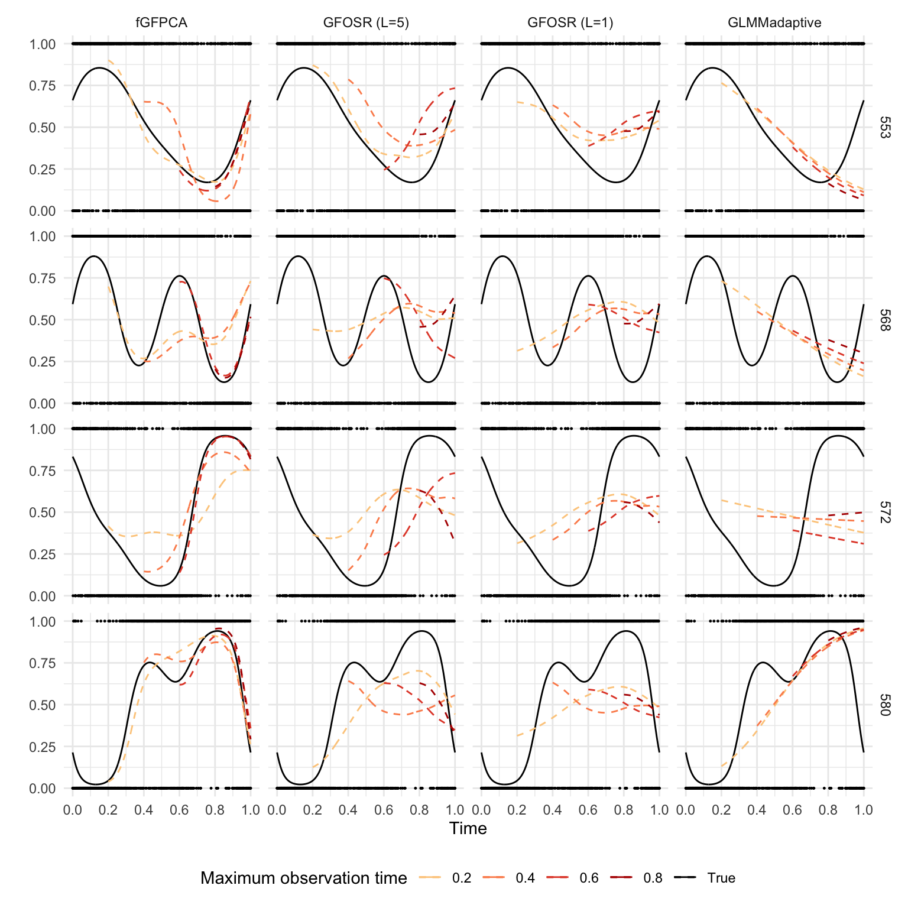
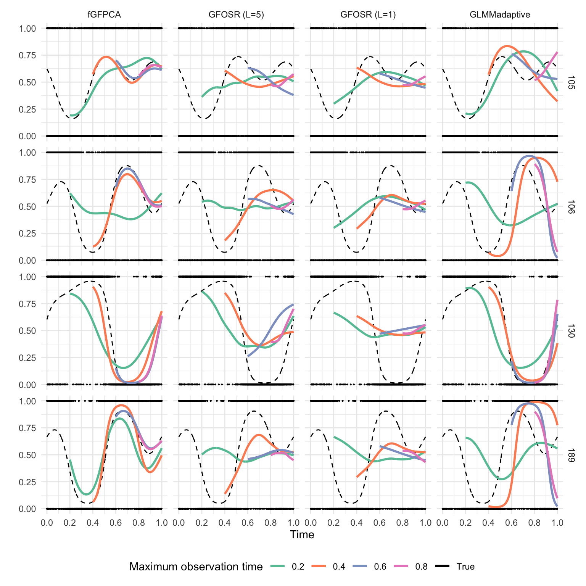
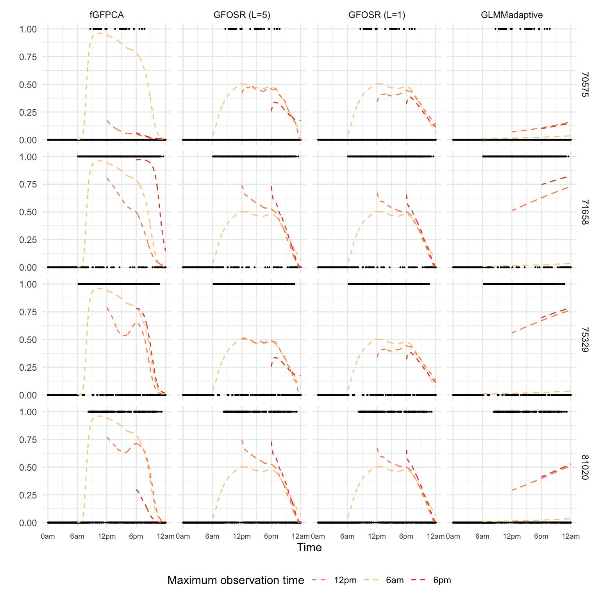

\[g[E(Y_i(t))] = \eta_i(t) = \beta_0(t)+b_i(t)\]
\[p(Y_i(t)) = h(Y_i(t))exp\{\eta_i(t)T[Y_i(t)]-A(\eta_i(t))\}\]
\[\eta_i(t) = \beta_0(t)+b_i(t)\]
In practice we would observe the discrete realization of \(\{Y_i(t), t\}\) along a dense grid. For simplicity, we assume the observation grid is regular (same across sample). When we have J observations points in \((0, T]\), then for the jth observation point, we denote the corresponding value of t as \(t_j\), and the corresponding outcome at this point \(Y_i(t_j)\).
Choose a proper bin width \(w\) considering model complexity and identifiability. For now let’s say the bins are equal-length and non-overlapping.
At the every bin, we fit a local intercept-only model:
\[g[E(Y_i(t_j))] =\eta_i(t_{m_s})= \beta_0(t_{m_s})+b_i(t_{m_s})\] where \(t_j \in (t_{m_s}-\frac{w}{2}, t_{m_s}+\frac{w}{2}]\).
Here we are basically saying that the value of latent function is constant within the same bin, which clearly is a misspecification of the true latent process.
From the model above. we will be able to estimate a \(\hat{\eta_i}(t_{m_s})\) on the binned grid for every individual in the training sample.
Here, we fit a FPCA model on the \(\hat{\eta_i}(t_{m_s})\) obtained from step 2:
\[\hat{\eta}_i(t_{m_s}) = f_0(t_{m_s})+\sum_{k=1}^K\xi_{ik}\phi_{k}(t_{m_s})+\epsilon_i(t_{m_s})\]
where \(\xi_{ik}\) independently follows normal distribution \(N(0, \lambda_k)\), and \(\epsilon_i(t_{m_s})\) at each point follows \(N(0, \sigma_2)\).
From this model, we will be able to obtain the following estimates which are shared across population:
The mean and basis functions are evaluated on the binned grid. To extend it to the original measurement grid data was collected on, we project the estimated eigenfunctions \(\hat{\mathbf{\Phi}}\) back use spline basis. Now we have extend the \(\hat{\phi}_k(t_{m_s})\) to the original grid \(\hat{\phi}_k(t_j)\)
Because of the misspecification of local GLMMs, the estimated eigenfunctions and eigenvalues are also biased by a constant multiplicative effect. Therefore, we use a GLMM to re-evaluate the mean function, eigenfunctions and eigenvalues.
Now, let’s assume we have a new subject \(u\) with \(J_u\) observations (\(J_u < J\)). Then the log-likelihood of this new subject would be:
\[l_u=\sum_{t_j<t_{J_u}}log(h(Y_u(t_j)))+\hat{\eta}_u(t_j)T(Y_u(t_j))-log(A[\hat{\eta}_u(t_j)])\]
where \(\hat{\eta}_u(t_j) = \hat{f}_0(t_j)+\sum_{k=1}^K \xi_{uk}\hat{\phi}(t_j)\).
With estimates for the population-level parameters from fGFPCA algorithms above, we can estimate \(\xi_{uk}\) by maximization of \(l_u\). Direct maximization some times does not have closed form solution. Numeric maximization methods seem not very stable as well. So I have decided to used a Bayes approach (Laplace Approximation):
Laplace Approximation would get the posterior mode of \(\xi_{uk}\) through quadratic approximation.
\[g(E(Y_i(t))) = \beta_0+\beta_1t+b_{i0}+b_{i1}t\]
\[g(E(Y_i(t))) = \sum_{k=1}^4\zeta_{k}B_k(t)+\sum_{l=1}^4\xi_{il}\phi_l(t)\]
We would like to use a second reference method for predictive performance comparision. In this model, predictions on a specific interval are all made using the last few observations in the observed window. For example, if we are given observations on [0, 0.2] (j = 1…200), we may use L observations taken right before t=0.2 (\(t_j: j=200, ... 200-(L-1)\)) as time-fixed covariate to predict any future time.
Let’s write out the model expression (with questionable notation). If the observations if up to \(t_m\), then:
\[\begin{aligned} g(E[Y_i(t)]) &= \beta_0(t) +\sum_{l=1}^L \beta_l (t)Y_i(t_l)\\ l & = m,...m-(j-1)\\ t &> t_m \end{aligned}\]
This is a simple function-on-scalar model with no random effect, meaning all subject with the same last observed outcome would have the same estimated/predicted latent track. This is clearly anti-intuitive. But adding random effects would make out-of-sample prediction impossible.
Under both frameworks, for each dataset we need to fit four models (similar to the GLMMadaptive method):
But prediction performance will be reported by equal-length time window.
Here we simulate binary data from cyclic latent process:
\[\begin{aligned} Y_i(t) & \sim Bernoulli(\frac{exp(\eta_i(t))}{1+exp(\eta_i(t))}) \\ \eta_i(t) &= f_0(t)+ \xi_{i1}\sqrt{2}sin(2\pi t)+\xi_{i2}\sqrt{2}cos(2\pi t)+\xi_{i3}\sqrt{2}sin(4\pi t)+\xi_{i4}\sqrt{2}cos(4\pi t) \end{aligned}\]
where:
load(here("Data/SimOutput_fGFPCA.RData"))
load(here("Data/SimOutput_GLMMadaptive.RData"))
load(here("Data/SimOutput_GFOSR_L1.RData"))
pred_list_gfosr_l1 <- pred_list_gfofr
t_vec_gfosr_l1 <- t_vec_gfofr
rm(pred_list_gfofr, t_vec_gfofr)
load(here("Data/SimOutput_GFOSR_L5.RData"))
pred_list_gfosr_l5 <- pred_list_gfofr
t_vec_gfosr_l5 <- t_vec_gfofr
rm(pred_list_gfofr, t_vec_gfofr)
rand_id <- sample(501:600, size = 4)bind_rows(
pred_list_all[[1]] %>% filter(id %in% rand_id) %>%
mutate(method="fGFPCA"),
pred_list_ref[[1]] %>% filter(id %in% rand_id) %>%
mutate(method = "GLMMadaptive"),
pred_list_gfosr_l1[[1]] %>% filter(id %in% rand_id) %>%
mutate(method = "GFOSR (L=1)") %>%
rename(pred0.2=pred_w1, pred0.4=pred_w2, pred0.6=pred_w3, pred0.8=pred_w4),
pred_list_gfosr_l5[[1]] %>% filter(id %in% rand_id) %>%
mutate(method = "GFOSR (L=5)") %>%
rename(pred0.2=pred_w1, pred0.4=pred_w2, pred0.6=pred_w3, pred0.8=pred_w4)
) %>% mutate_at(vars(eta_i, pred0.2, pred0.4, pred0.6, pred0.8),
.funs = function(x){exp(x)/(1+exp(x))}) %>%
mutate(method=factor(method,
levels = c("fGFPCA", "GFOSR (L=5)", "GFOSR (L=1)","GLMMadaptive"))) %>%
ggplot()+
geom_point(aes(x=t, y=Y), size = 0.2)+
geom_line(aes(x=t, y=eta_i, col = "True"))+
geom_line(aes(x=t, y=pred0.2, col = "0.2"), linetype="dashed", na.rm=T)+
geom_line(aes(x=t, y=pred0.4, col = "0.4"), linetype="dashed", na.rm=T)+
geom_line(aes(x=t, y=pred0.6, col = "0.6"), linetype="dashed", na.rm=T)+
geom_line(aes(x=t, y=pred0.8, col = "0.8"), linetype="dashed", na.rm=T)+
facet_grid(rows = vars(id), cols = vars(method))+
labs(col = "Maximum observation time", x = "Time", y="")+
scale_x_continuous(breaks = seq(0, 1, by = 0.2))+
theme(legend.position = "bottom")+
scale_color_manual(values = cols)
## ISE container
ise_fgfpca <- ise_adglmm <- ise_gfosr_l1 <- ise_gfosr_l5 <-
array(NA, dim = c(length(window)-2, length(window)-2, M))
# dims: prediction window, max obs time, simulation iter## calculation
for(m in 1:M){
# this_df <- pred_list_all[[m]]
ise_tb <- pred_list_all[[m]] %>%
mutate(err1 = (pred0.2-eta_i)^2,
err2 = (pred0.4-eta_i)^2,
err3 = (pred0.6-eta_i)^2,
err4 = (pred0.8-eta_i)^2) %>%
select(id, t, starts_with("err")) %>%
mutate(window = cut(t, breaks = window, include.lowest = T)) %>%
group_by(window, id) %>%
summarise_at(vars(err1, err2, err3, err4), sum) %>%
group_by(window) %>%
summarize_at(vars(err1, err2, err3, err4), mean) %>%
filter(window != "[0,0.2]") %>%
select(starts_with("err"))
ise_fgfpca[, ,m] <- as.matrix(ise_tb)
}
mean_ise_fgfpca <- apply(ise_fgfpca, c(1, 2), mean)
# mean_ise <- data.frame(mean_ise) %>%
# mutate(Window = c("(0.2, 0.4]", "(0.4, 0.6]", "(0.6, 0.8]", "(0.8, 1.0]"),
# .before = 1)
colnames(mean_ise_fgfpca) <- c("0.2", "0.4", "0.6", "0.8")## calculation
for(m in 1:M){
# this_df <- pred_list_gfosr_l1[[m]]
ise_tb <- pred_list_ref[[m]] %>%
mutate(err1 = (pred0.2-eta_i)^2,
err2 = (pred0.4-eta_i)^2,
err3 = (pred0.6-eta_i)^2,
err4 = (pred0.8-eta_i)^2) %>%
select(id, t, starts_with("err")) %>%
mutate(window = cut(t, breaks = window, include.lowest = T)) %>%
group_by(window, id) %>%
summarise_at(vars(err1, err2, err3, err4), sum) %>%
group_by(window) %>%
summarize_at(vars(err1, err2, err3, err4), mean) %>%
filter(window != "[0,0.2]") %>%
select(starts_with("err"))
ise_adglmm[, ,m] <- as.matrix(ise_tb)
}
mean_ise_adglmm <- apply(ise_adglmm, c(1, 2), mean)
colnames(mean_ise_adglmm) <- c("0.2", "0.4", "0.6", "0.8")## calculation
for(m in 1:M){
# this_df <- pred_list_ref[[m]]
ise_tb <- pred_list_gfosr_l1[[m]] %>%
mutate(err1 = (pred_w1-eta_i)^2,
err2 = (pred_w2-eta_i)^2,
err3 = (pred_w3-eta_i)^2,
err4 = (pred_w4-eta_i)^2) %>%
select(id, t, starts_with("err"), window) %>%
# mutate(window = factor(window, levels = 1:5,
# labels = c("[0,0.2]", "(0.2,0.4]", "(0.4,0.6]",))) %>%
group_by(window, id) %>%
summarise_at(vars(err1, err2, err3, err4), sum) %>%
group_by(window) %>%
summarize_at(vars(err1, err2, err3, err4), mean) %>%
filter(window != 1) %>%
select(starts_with("err"))
ise_gfosr_l1[, ,m] <- as.matrix(ise_tb)
}
mean_ise_gfosr_l1 <- apply(ise_gfosr_l1, c(1, 2), mean)
colnames(mean_ise_gfosr_l1) <- c("0.2", "0.4", "0.6", "0.8")## calculation
for(m in 1:M){
# this_df <- pred_list_ref[[m]]
ise_tb <- pred_list_gfosr_l5[[m]] %>%
mutate(err1 = (pred_w1-eta_i)^2,
err2 = (pred_w2-eta_i)^2,
err3 = (pred_w3-eta_i)^2,
err4 = (pred_w4-eta_i)^2) %>%
select(id, t, starts_with("err"), window) %>%
# mutate(window = factor(window, levels = 1:5,
# labels = c("[0,0.2]", "(0.2,0.4]", "(0.4,0.6]",))) %>%
group_by(window, id) %>%
summarise_at(vars(err1, err2, err3, err4), sum) %>%
group_by(window) %>%
summarize_at(vars(err1, err2, err3, err4), mean) %>%
filter(window != 1) %>%
select(starts_with("err"))
ise_gfosr_l5[, ,m] <- as.matrix(ise_tb)
}
mean_ise_gfosr_l5 <- apply(ise_gfosr_l5, c(1, 2), mean)
colnames(mean_ise_gfosr_l5) <- c("0.2", "0.4", "0.6", "0.8")## a function to calculate AUC
get_auc <- function(y, pred){
if(sum(is.na(y))>0 | sum(is.na(pred))>0){
auc <- NA
}
else{
this_perf <- performance(prediction(pred, y), measure = "auc")
auc <- this_perf@y.values[[1]]
}
return(auc)
}## auc container
auc_fgfpca <- auc_adglmm <- auc_gfosr_l1 <- auc_gfosr_l5 <-
array(NA, dim = c(length(window)-2, length(window)-2, M))for(m in 1:M){
this_df <- pred_list_all[[m]]
auc_tb <- this_df %>%
mutate(window = cut(t, breaks = window, include.lowest = T)) %>%
select(Y, starts_with("pred"), window) %>%
group_by(window) %>%
summarise(auc1 = get_auc(Y, pred0.2),
auc2 = get_auc(Y, pred0.4),
auc3 = get_auc(Y, pred0.6),
auc4 = get_auc(Y, pred0.8)) %>%
filter(window != "[0,0.2]") %>%
select(starts_with("auc"))
auc_fgfpca[, ,m] <- as.matrix(auc_tb)
}
mean_auc_fgfpca <- apply(auc_fgfpca, c(1, 2), mean)
# mean_auc <- data.frame(mean_auc) %>%
# mutate(Window = c("(0.2, 0.4]", "(0.4, 0.6]", "(0.6, 0.8]", "(0.8, 1.0]"),
# .before = 1)
colnames(mean_auc_fgfpca) <- c("0.2", "0.4", "0.6", "0.8")for(m in 1:M){
this_df <- pred_list_ref[[m]]
auc_tb <- this_df %>%
mutate(window = cut(t, breaks = window, include.lowest = T)) %>%
select(Y, starts_with("pred"), window) %>%
group_by(window) %>%
summarise(auc1 = get_auc(Y, pred0.2),
auc2 = get_auc(Y, pred0.4),
auc3 = get_auc(Y, pred0.6),
auc4 = get_auc(Y, pred0.8)) %>%
filter(window != "[0,0.2]") %>%
select(starts_with("auc"))
auc_adglmm[, ,m] <- as.matrix(auc_tb)
}
mean_auc_adglmm <- apply(auc_adglmm, c(1, 2), mean)
colnames(mean_auc_adglmm) <- c("0.2", "0.4", "0.6", "0.8")for(m in 1:M){
this_df <- pred_list_gfosr_l1[[m]]
auc_tb <- this_df %>%
select(Y, starts_with("pred"), window) %>%
group_by(window) %>%
summarise(auc1 = get_auc(Y, pred_w1),
auc2 = get_auc(Y, pred_w2),
auc3 = get_auc(Y, pred_w3),
auc4 = get_auc(Y, pred_w4)) %>%
filter(window != 1) %>%
select(starts_with("auc"))
auc_gfosr_l1[, ,m] <- as.matrix(auc_tb)
}
mean_auc_gfosr_l1 <- apply(auc_gfosr_l1, c(1, 2), mean)
colnames(mean_auc_gfosr_l1) <- c("0.2", "0.4", "0.6", "0.8")for(m in 1:M){
this_df <- pred_list_gfosr_l5[[m]]
auc_tb <- this_df %>%
select(Y, starts_with("pred"), window) %>%
group_by(window) %>%
summarise(auc1 = get_auc(Y, pred_w1),
auc2 = get_auc(Y, pred_w2),
auc3 = get_auc(Y, pred_w3),
auc4 = get_auc(Y, pred_w4)) %>%
filter(window != 1) %>%
select(starts_with("auc"))
auc_gfosr_l5[, ,m] <- as.matrix(auc_tb)
}
mean_auc_gfosr_l5 <- apply(auc_gfosr_l5, c(1, 2), mean)
colnames(mean_auc_gfosr_l5) <- c("0.2", "0.4", "0.6", "0.8")fgfpca1 <- rbind(mean_ise_fgfpca ,mean_auc_fgfpca) %>% as_tibble() %>%
mutate(Window = rep(c("(0.2, 0.4]", "(0.4, 0.6]", "(0.6, 0.8]", "(0.8, 1.0]"), 2), .before=1)
gfosr_l5_1 <- rbind(mean_ise_gfosr_l5 ,mean_auc_gfosr_l5) %>% as_tibble()
gfosr_l1_1 <- rbind(mean_ise_gfosr_l1 ,mean_auc_gfosr_l1) %>% as_tibble()
adglmm1 <- rbind(mean_ise_adglmm ,mean_auc_adglmm) %>% as_tibble()
bind_cols(fgfpca1, gfosr_l5_1, gfosr_l1_1, adglmm1, .name_repair = "minimal") %>%
kable(digits = 3, booktabs=T,
table.attr="style=\"color:black;\"") %>%
kable_styling(full_width = F) %>%
add_header_above(c(" " = 1, "fGFPCA" = 4, "GFOSR (L=5)" = 4,
"GFOSR (L=1)" = 4, "GLMMadaptive" = 4)) %>%
add_header_above(c(" " = 1, "Maximum observation time" = 16)) %>%
group_rows(index = c("ISE"= 4, "AUC" = 4))| Window | 0.2 | 0.4 | 0.6 | 0.8 | 0.2 | 0.4 | 0.6 | 0.8 | 0.2 | 0.4 | 0.6 | 0.8 | 0.2 | 0.4 | 0.6 | 0.8 |
|---|---|---|---|---|---|---|---|---|---|---|---|---|---|---|---|---|
| ISE | ||||||||||||||||
| (0.2, 0.4] | 146.407 | 274.947 | 362.476 | 387.708 | ||||||||||||
| (0.4, 0.6] | 183.967 | 74.977 | 277.438 | 220.209 | 286.614 | 262.552 | 291.579 | 269.799 | ||||||||
| (0.6, 0.8] | 218.265 | 49.275 | 15.776 | 322.338 | 373.108 | 325.017 | 385.701 | 410.508 | 389.305 | 315.778 | 282.736 | 278.242 | ||||
| (0.8, 1.0] | 108.918 | 77.981 | 17.747 | 12.005 | 290.982 | 318.079 | 350.850 | 333.580 | 328.482 | 341.274 | 354.211 | 347.067 | 563.011 | 477.485 | 597.746 | 600.340 |
| AUC | ||||||||||||||||
| (0.2, 0.4] | 0.748 | 0.686 | 0.624 | 0.591 | ||||||||||||
| (0.4, 0.6] | 0.664 | 0.734 | 0.563 | 0.630 | 0.543 | 0.590 | 0.524 | 0.596 | ||||||||
| (0.6, 0.8] | 0.715 | 0.790 | 0.803 | 0.669 | 0.628 | 0.676 | 0.604 | 0.577 | 0.615 | 0.669 | 0.694 | 0.687 | ||||
| (0.8, 1.0] | 0.740 | 0.755 | 0.781 | 0.784 | 0.626 | 0.606 | 0.552 | 0.584 | 0.588 | 0.564 | 0.537 | 0.551 | 0.514 | 0.556 | 0.526 | 0.564 |
I chose not to report fitting and prediction time separately because it is too difficult to tell them apart for the GFOSR models.
data.frame(
"Method" = c("fGFPCA", "GLMMadaptive", "GFOSR (L=1)", "GFOSR (L=5)"),
"Time" = c(mean(fit_time/60+pred_time),
mean(fit_time_ref+pred_time_ref/60),
mean(t_vec_gfosr_l1/60),
mean(t_vec_gfosr_l5/60))) %>%
kable(digits = 3, booktabs = T, table.attr = "style = \"color:black;\"") %>%
kable_styling(full_width = F) | Method | Time |
|---|---|
| fGFPCA | 2.317 |
| GLMMadaptive | 2.304 |
| GFOSR (L=1) | 0.025 |
| GFOSR (L=5) | 0.144 |
I have used 100 subjects for training and testing, and repeated 500 times. When fitting GLMMadpative, I reduce the number of measurements in the training dataset to 1/10 by taking one every 10 observations. The prediction is on the original grid.
load(here("Data/SubSimOutput_GLMMadaptive.RData"))
load(here("Data/SubSimOutput_fGFPCA.RData"))
pred_subset_adglmm <- pred_subset_adglmm[!num_probs]
fit_time_subset_adglmm <- fit_time_subset_adglmm[!num_probs]
pred_time_subset_adglmm <- pred_time_subset_adglmm[!num_probs]
load(here("Data/SubSimOutput_GFOSR_L1.RData"))
pred_subset_gfosr_l1 <- pred_list_gfofr_subset
t_subset_gfosr_l1 <- t_vec_gfofr_subset
rm(pred_list_gfofr_subset, t_vec_gfofr_subset)
load(here("Data/SubSimOutput_GFOSR_L5.RData"))
pred_subset_gfosr_l5 <- pred_list_gfofr_subset
t_subset_gfosr_l5 <- t_vec_gfofr_subset
rm(pred_list_gfofr_subset, t_vec_gfofr_subset)
rand_id <- sample(101:200, size = 4)bind_rows(
pred_subset_fGFPCA[[1]] %>% filter(id %in% rand_id) %>% mutate(method="fGFPCA"),
pred_subset_gfosr_l5[[1]] %>% filter(id %in% rand_id) %>% mutate(method = "GFOSR (L=5)") %>%
rename(pred0.2=pred_w1, pred0.4=pred_w2, pred0.6=pred_w3, pred0.8=pred_w4),
pred_subset_gfosr_l1[[1]] %>% filter(id %in% rand_id) %>% mutate(method = "GFOSR (L=1)") %>%
rename(pred0.2=pred_w1, pred0.4=pred_w2, pred0.6=pred_w3, pred0.8=pred_w4),
pred_subset_adglmm[[1]] %>% filter(id %in% rand_id) %>% mutate(method = "GLMMadaptive")) %>%
mutate_at(vars(eta_i, pred0.2, pred0.4, pred0.6, pred0.8),
.funs = function(x){exp(x)/(1+exp(x))}) %>%
mutate(method=factor(method,
levels = c("fGFPCA", "GFOSR (L=5)", "GFOSR (L=1)","GLMMadaptive"))) %>%
ggplot()+
geom_point(aes(x=t, y=Y), size = 0.2)+
geom_line(aes(x=t, y=eta_i, col = "True"))+
geom_line(aes(x=t, y=pred0.2, col = "0.2"), linetype="dashed", na.rm=T)+
geom_line(aes(x=t, y=pred0.4, col = "0.4"), linetype="dashed", na.rm=T)+
geom_line(aes(x=t, y=pred0.6, col = "0.6"), linetype="dashed", na.rm=T)+
geom_line(aes(x=t, y=pred0.8, col = "0.8"), linetype="dashed", na.rm=T)+
facet_grid(rows = vars(id), cols = vars(method))+
labs(col = "Maximum observation time", x = "Time", y="")+
scale_x_continuous(breaks = seq(0, 1, by = 0.2))+
theme(legend.position = "bottom")+
scale_color_manual(values = cols)
## ISE container
ise_fgfpca2 <- ise_adglmm2 <- ise_gfosr_l1_2 <- ise_gfosr_l5_2 <-
array(NA, dim = c(length(window)-2, length(window)-2, M))
# dims: prediction window, max obs time, simulation iterfor(m in 1:length(pred_subset_fGFPCA)){
this_df <- pred_subset_fGFPCA[[m]]
ise_tb_m <- this_df %>%
mutate(err1 = (pred0.2-eta_i)^2,
err2 = (pred0.4-eta_i)^2,
err3 = (pred0.6-eta_i)^2,
err4 = (pred0.8-eta_i)^2) %>%
select(id, t, starts_with("err")) %>%
mutate(window = cut(t, breaks = window, include.lowest = T)) %>%
group_by(window, id) %>%
summarise_at(vars(err1, err2, err3, err4), sum) %>%
group_by(window) %>%
summarize_at(vars(err1, err2, err3, err4), mean) %>%
filter(window != "[0,0.2]") %>%
select(starts_with("err")) %>% as.matrix()
ise_fgfpca2[,,m] <- ise_tb_m
}
mean_ise_fgfpca2 <- apply(ise_fgfpca2, c(1, 2), mean)
colnames(mean_ise_fgfpca2) <- c("0.2", "0.4", "0.6", "0.8")for(m in 1:length(pred_subset_adglmm)){
this_df <- pred_subset_adglmm[[m]]
ise_tb_m <- this_df %>%
mutate(err1 = (pred0.2-eta_i)^2,
err2 = (pred0.4-eta_i)^2,
err3 = (pred0.6-eta_i)^2,
err4 = (pred0.8-eta_i)^2) %>%
select(id, t, starts_with("err")) %>%
mutate(window = cut(t, breaks = window, include.lowest = T)) %>%
group_by(window, id) %>%
summarise_at(vars(err1, err2, err3, err4), sum) %>%
group_by(window) %>%
summarize_at(vars(err1, err2, err3, err4), mean) %>%
filter(window != "[0,0.2]") %>%
select(starts_with("err")) %>% as.matrix()
ise_adglmm2[,,m] <- ise_tb_m
}
mean_ise_adglmm2<- apply(ise_adglmm2, c(1, 2), mean, na.rm = T)
colnames(mean_ise_adglmm2) <- c("0.2", "0.4", "0.6", "0.8")for(m in 1:length(pred_subset_gfosr_l1)){
this_df <- pred_subset_gfosr_l1[[m]]
ise_tb_m <- this_df %>%
mutate(err1 = (pred_w1-eta_i)^2,
err2 = (pred_w2-eta_i)^2,
err3 = (pred_w3-eta_i)^2,
err4 = (pred_w4-eta_i)^2) %>%
select(id, t, starts_with("err"), window) %>%
group_by(window, id) %>%
summarise_at(vars(err1, err2, err3, err4), sum) %>%
group_by(window) %>%
summarize_at(vars(err1, err2, err3, err4), mean) %>%
filter(window != 1) %>%
select(starts_with("err")) %>% as.matrix()
ise_gfosr_l1_2[,,m] <- ise_tb_m
}
mean_ise_gfosr_l1_2<- apply(ise_gfosr_l1_2, c(1, 2), mean, na.rm = T)
colnames(mean_ise_gfosr_l1_2) <- c("0.2", "0.4", "0.6", "0.8")for(m in 1:length(pred_subset_gfosr_l5)){
this_df <- pred_subset_gfosr_l5[[m]]
ise_tb_m <- this_df %>%
mutate(err1 = (pred_w1-eta_i)^2,
err2 = (pred_w2-eta_i)^2,
err3 = (pred_w3-eta_i)^2,
err4 = (pred_w4-eta_i)^2) %>%
select(id, t, starts_with("err"), window) %>%
group_by(window, id) %>%
summarise_at(vars(err1, err2, err3, err4), sum) %>%
group_by(window) %>%
summarize_at(vars(err1, err2, err3, err4), mean) %>%
filter(window != 1) %>%
select(starts_with("err")) %>% as.matrix()
ise_gfosr_l5_2[,,m] <- ise_tb_m
}
mean_ise_gfosr_l5_2 <- apply(ise_gfosr_l5_2, c(1, 2), mean, na.rm = T)
colnames(mean_ise_gfosr_l5_2) <- c("0.2", "0.4", "0.6", "0.8")## auc container
auc_fgfpca2 <- auc_adglmm2 <- auc_gfosr_l1_2 <- auc_gfosr_l5_2 <-
array(NA, dim = c(length(window)-2, length(window)-2, M))for(m in 1:length(pred_subset_fGFPCA)){
this_df <- pred_subset_fGFPCA[[m]]
auc_tb_m <- this_df %>%
mutate(window = cut(t, breaks = window, include.lowest = T)) %>%
select(Y, starts_with("pred"), window) %>%
group_by(window) %>%
summarise(auc1 = get_auc(Y, pred0.2),
auc2 = get_auc(Y, pred0.4),
auc3 = get_auc(Y, pred0.6),
auc4 = get_auc(Y, pred0.8)) %>%
filter(window != "[0,0.2]") %>%
select(starts_with("auc")) %>% as.matrix()
auc_fgfpca2[, , m] <- auc_tb_m
}
mean_auc_fgfpca2 <- apply(auc_fgfpca2, c(1,2), mean)
colnames(mean_auc_fgfpca2) <- c("0.2", "0.4", "0.6", "0.8")for(m in 1:length(pred_subset_adglmm)){
this_df <- pred_subset_adglmm[[m]]
auc_tb_m <- this_df %>%
mutate(window = cut(t, breaks = window, include.lowest = T)) %>%
select(Y, starts_with("pred"), window) %>%
group_by(window) %>%
summarise(auc1 = get_auc(Y, pred0.2),
auc2 = get_auc(Y, pred0.4),
auc3 = get_auc(Y, pred0.6),
auc4 = get_auc(Y, pred0.8)) %>%
filter(window != "[0,0.2]") %>%
select(starts_with("auc")) %>% as.matrix()
auc_adglmm2[, , m] <- auc_tb_m
}
mean_auc_adglmm2 <- apply(auc_adglmm2, c(1,2), mean, na.rm = T)
colnames(mean_auc_adglmm2) <- c("0.2", "0.4", "0.6", "0.8")for(m in 1:length(pred_subset_gfosr_l1)){
this_df <- pred_subset_gfosr_l1[[m]]
auc_tb_m <- this_df %>%
select(Y, starts_with("pred"), window) %>%
group_by(window) %>%
summarise(auc1 = get_auc(Y, pred_w1),
auc2 = get_auc(Y, pred_w2),
auc3 = get_auc(Y, pred_w3),
auc4 = get_auc(Y, pred_w4)) %>%
filter(window != 1) %>%
select(starts_with("auc")) %>% as.matrix()
auc_gfosr_l1_2[, , m] <- auc_tb_m
}
mean_auc_gfosr_l1_2 <- apply(auc_gfosr_l1_2, c(1,2), mean)
colnames(mean_auc_gfosr_l1_2) <- c("0.2", "0.4", "0.6", "0.8")for(m in 1:length(pred_subset_gfosr_l5)){
this_df <- pred_subset_gfosr_l5[[m]]
auc_tb_m <- this_df %>%
select(Y, starts_with("pred"), window) %>%
group_by(window) %>%
summarise(auc1 = get_auc(Y, pred_w1),
auc2 = get_auc(Y, pred_w2),
auc3 = get_auc(Y, pred_w3),
auc4 = get_auc(Y, pred_w4)) %>%
filter(window != 1) %>%
select(starts_with("auc")) %>% as.matrix()
auc_gfosr_l5_2[, , m] <- auc_tb_m
}
mean_auc_gfosr_l5_2 <- apply(auc_gfosr_l5_2, c(1,2), mean)
colnames(mean_auc_gfosr_l5_2) <- c("0.2", "0.4", "0.6", "0.8")fgfpca2 <- rbind(mean_ise_fgfpca2 ,mean_auc_fgfpca2) %>% as_tibble() %>%
mutate(Window = rep(c("(0.2, 0.4]", "(0.4, 0.6]", "(0.6, 0.8]", "(0.8, 1.0]"), 2), .before=1)
gfosr_l5_2 <- rbind(mean_ise_gfosr_l5_2 ,mean_auc_gfosr_l5_2) %>% as_tibble()
gfosr_l1_2 <- rbind(mean_ise_gfosr_l1_2 ,mean_auc_gfosr_l1_2) %>% as_tibble()
adglmm2 <- rbind(mean_ise_adglmm2 ,mean_auc_adglmm2) %>% as_tibble()
bind_cols(fgfpca2, gfosr_l5_2, gfosr_l1_2, adglmm2, .name_repair = "minimal") %>%
kable(digits = 3, booktabs=T,
table.attr="style=\"color:black;\"") %>%
kable_styling(full_width = F) %>%
add_header_above(c(" " = 1, "fGFPCA" = 4, "GFOSR (L=5)" = 4,
"GFOSR (L=1)" = 4, "GLMMadaptive" = 4)) %>%
add_header_above(c(" " = 1, "Maximum observation time" = 16)) %>%
group_rows(index = c("ISE"= 4, "AUC" = 4))| Window | 0.2 | 0.4 | 0.6 | 0.8 | 0.2 | 0.4 | 0.6 | 0.8 | 0.2 | 0.4 | 0.6 | 0.8 | 0.2 | 0.4 | 0.6 | 0.8 |
|---|---|---|---|---|---|---|---|---|---|---|---|---|---|---|---|---|
| ISE | ||||||||||||||||
| (0.2, 0.4] | 150.641 | 286.853 | 367.282 | 374.836 | ||||||||||||
| (0.4, 0.6] | 188.065 | 77.380 | 286.628 | 227.225 | 290.781 | 265.809 | 268.390 | 463.337 | ||||||||
| (0.6, 0.8] | 224.001 | 51.533 | 16.879 | 328.612 | 374.572 | 326.522 | 386.705 | 408.427 | 388.427 | 319.731 | 287.001 | 233.510 | ||||
| (0.8, 1.0] | 112.163 | 81.368 | 19.592 | 13.399 | 301.165 | 324.817 | 353.888 | 335.139 | 331.488 | 342.935 | 354.800 | 347.627 | 228.335 | 469.769 | 331.509 | 131.993 |
| AUC | ||||||||||||||||
| (0.2, 0.4] | 0.746 | 0.679 | 0.620 | 0.672 | ||||||||||||
| (0.4, 0.6] | 0.662 | 0.734 | 0.549 | 0.627 | 0.536 | 0.590 | 0.622 | 0.671 | ||||||||
| (0.6, 0.8] | 0.710 | 0.787 | 0.801 | 0.656 | 0.617 | 0.668 | 0.598 | 0.574 | 0.613 | 0.689 | 0.698 | 0.731 | ||||
| (0.8, 1.0] | 0.740 | 0.754 | 0.781 | 0.784 | 0.611 | 0.588 | 0.551 | 0.578 | 0.580 | 0.556 | 0.536 | 0.551 | 0.681 | 0.629 | 0.679 | 0.743 |
Among 500 hundred iterations, 6 did not converge for the GLMMadaptive model. No numeric issue for fGFPCA.
data.frame(
"Method" = c("fGFPCA", "GLMMadaptive", "GFOSR (L=1)", "GFOSR (L=5)"),
"Time" = c(mean(fit_time_subset_fGFPCA/60+pred_time_subset_fGFPCA),
mean(fit_time_subset_adglmm+pred_time_subset_adglmm/60),
mean(t_subset_gfosr_l1/60),
mean(t_subset_gfosr_l5/60))) %>%
kable(digits = 3, booktabs = T, table.attr = "style = \"color:black;\"") %>%
kable_styling(full_width = F) | Method | Time |
|---|---|
| fGFPCA | 1.629 |
| GLMMadaptive | 5.479 |
| GFOSR (L=1) | 0.010 |
| GFOSR (L=5) | 0.054 |
We take 60% subjects (N = 5257) for training, 40% (n = 3506) for out-of-sample prediction. When using the full sample The debiase step (mgcv::bam) in fGFPCA took a really a long time, and GLMM adaptive only works for intercept-only model. In the debias step, re-evaluated eigenvalues also lost their decreasing nature.
# df_nhanes <- read_rds(here("Data/nhanes_bi.rds"))
load(here("Data/ApplOutput_fGFPCA.RData"))
load(here("Data/ApplOutput_GLMMadaptive.RData"))
load(here("Data/Appl_GFOSR_L5.RData"))
load(here("Data/Appl_GFOSR_L1.RData"))
pred_appl_gfosr_l1 <- pred_appl_gfosr_l1 %>%
rename(pred360=pred_w1, pred720=pred_w2, pred1080=pred_w3)
pred_appl_gfosr_l5 <- pred_appl_gfosr_l5 %>%
rename(pred360=pred_w1, pred720=pred_w2, pred1080=pred_w3)df_nhanes %>% select(SEQN, Z, sind) %>%
filter(SEQN %in% unique(nhanes_pred_adglmm$id) | SEQN %in% unique(nhanes_pred_fgfpca$id)) %>%
mutate(Z = factor(Z, levels = 0:1, labels = c("Inactive", "Active"))) %>%
mutate(SEQN = factor(SEQN)) %>%
ggplot()+
geom_tile(aes(x=sind, y = SEQN, fill = Z))+
labs(x="Time", y="Subject", title = "Overview of NHANES binary activity indicator")+
theme(axis.text.y = element_blank())+
scale_x_continuous(breaks = seq(0, 1440, by = 480),
labels = c("Midnight", "8am", "4pm", "Midnight"))# window
window <- seq(0, 1440, by = 360)auc_appl_fgfpca <- pred_nhanes_fgfpca %>%
mutate(window = cut(sind, breaks = window, include.lowest = T)) %>%
select(Y, starts_with("pred"), window) %>%
group_by(window) %>%
summarise(auc1 = get_auc(Y, pred360),
auc2 = get_auc(Y, pred720),
auc3 = get_auc(Y, pred1080)) %>%
filter(window != "[0,360]") %>%
select(starts_with("auc"))
auc_appl_gfosr_l5 <- pred_appl_gfosr_l5 %>%
select(-window) %>%
mutate(window = cut(sind, breaks = window, include.lowest = T)) %>%
select(Y, starts_with("pred"), window) %>%
group_by(window) %>%
summarise(auc1 = get_auc(Y, pred360),
auc2 = get_auc(Y, pred720),
auc3 = get_auc(Y, pred1080)) %>%
filter(window != "[0,360]") %>%
select(starts_with("auc"))
auc_appl_gfosr_l1 <- pred_appl_gfosr_l1 %>%
select(-window) %>%
mutate(window = cut(sind, breaks = window, include.lowest = T)) %>%
select(Y, starts_with("pred"), window) %>%
group_by(window) %>%
summarise(auc1 = get_auc(Y, pred360),
auc2 = get_auc(Y, pred720),
auc3 = get_auc(Y, pred1080)) %>%
filter(window != "[0,360]") %>%
select(starts_with("auc"))
auc_appl_adglmm <- pred_nhanes_adglmm %>%
mutate(window = cut(sind, breaks = window, include.lowest = T)) %>%
select(Y, starts_with("pred"), window) %>%
group_by(window) %>%
summarise(auc1 = get_auc(Y, pred360),
auc2 = get_auc(Y, pred720),
auc3 = get_auc(Y, pred1080)) %>%
filter(window != "[0,360]") %>%
select(starts_with("auc"))
colnames(auc_appl_fgfpca) <- colnames(auc_appl_gfosr_l5) <- colnames(auc_appl_gfosr_l1) <- colnames(auc_appl_adglmm) <- c("6am", "12pm", "6pm")bind_cols(Window = c("6am-12pm", "12pm-6pm", "6pm-12am"),
auc_appl_fgfpca, auc_appl_gfosr_l5, auc_appl_gfosr_l1, auc_appl_adglmm,
.name_repair = "minimal") %>%
kable(digits = 3, booktabs=T,
table.attr="style=\"color:black;\"") %>%
kable_styling(full_width = F) %>%
add_header_above(c(" " = 1, "fGFPCA" = 3, "GFOSR (L=5)" = 3,
"GFOSR (L=1)" = 3, "GLMMadaptive" = 3)) %>%
add_header_above(c(" " = 1, "Maximum observation time" = 12))| Window | 6am | 12pm | 6pm | 6am | 12pm | 6pm | 6am | 12pm | 6pm | 6am | 12pm | 6pm |
|---|---|---|---|---|---|---|---|---|---|---|---|---|
| 6am-12pm | 0.703 | 0.689 | 0.684 | 0.581 | ||||||||
| 12pm-6pm | 0.536 | 0.709 | 0.519 | 0.699 | 0.520 | 0.654 | 0.532 | 0.701 | ||||
| 6pm-12am | 0.716 | 0.679 | 0.773 | 0.677 | 0.678 | 0.723 | 0.677 | 0.676 | 0.708 | 0.514 | 0.565 | 0.626 |
rand_id <- sample(unique(pred_nhanes_adglmm$id), 4)
cols <- cols[1:3]
names(cols) <- c("6am", "12pm", "6pm")
bind_rows(
pred_nhanes_fgfpca %>% filter(id %in% rand_id) %>% mutate(method="fGFPCA"),
pred_appl_gfosr_l5 %>% filter(id %in% rand_id) %>% mutate(method = "GFOSR (L=5)"),
pred_appl_gfosr_l1 %>% filter(id %in% rand_id) %>% mutate(method = "GFOSR (L=1)"),
pred_nhanes_adglmm %>% filter(id %in% rand_id) %>% mutate(method = "GLMMadaptive")) %>%
mutate_at(vars(pred360, pred720, pred1080),
.funs = function(x){exp(x)/(1+exp(x))}) %>%
mutate(method=factor(method,
levels = c("fGFPCA", "GFOSR (L=5)", "GFOSR (L=1)","GLMMadaptive"))) %>%
ggplot()+
geom_point(aes(x=sind, y=Y), size = 0.2)+
geom_line(aes(x=sind, y=pred360, col = "6am"), linetype="dashed", na.rm=T)+
geom_line(aes(x=sind, y=pred720, col = "12pm"), linetype="dashed", na.rm=T)+
geom_line(aes(x=sind, y=pred1080, col = "6pm"), linetype="dashed", na.rm=T)+
facet_grid(rows = vars(id), cols = vars(method))+
labs(col = "Maximum observation time", x = "Time", y="")+
scale_x_continuous(breaks = seq(0, 1440, by = 360),
labels = c("0am", "6am", "12pm", "6pm", "12am"))+
theme(legend.position = "bottom", axis.text.x = element_text(size = 7))+
scale_color_manual(values = cols)